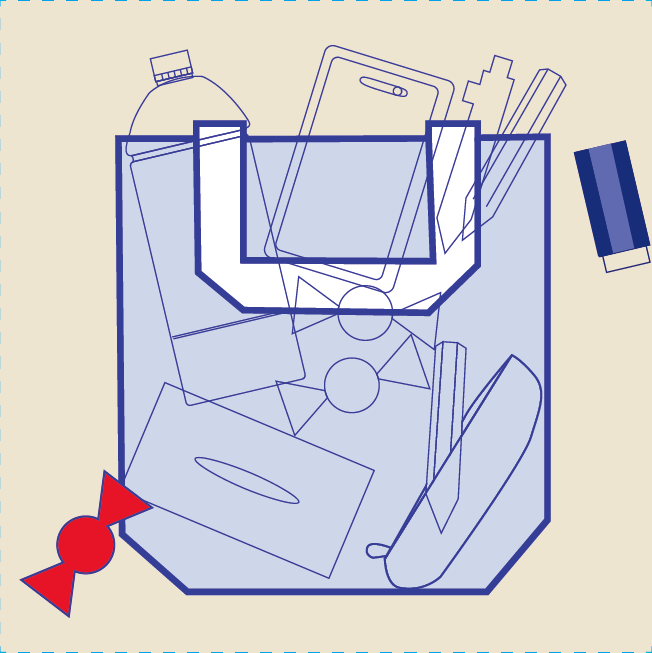
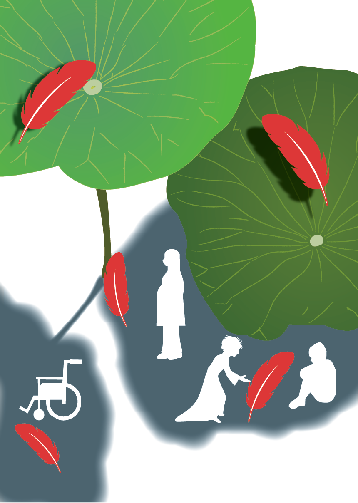

花のコラージュ
Photoshop
花の写真を組み合わせ、やわらかい雰囲気になるように構成しました。
情報デザイン学科
About
情報デザイン学科で、ロゴ制作やWeb制作を学んでいます。 シンプルで見やすいデザインを意識して制作しています。
森駿人
情報デザイン学科 / Portfolio 2026
ロゴ・Web・ポスター・LINEスタンプ制作
Works
授業で制作した作品を、種類ごとに整理して掲載しています。
Photoshop
花の写真を組み合わせ、やわらかい雰囲気になるように構成しました。

Illustrator
スイカをモチーフに、色と形のバランスを考えてグラフィックを制作しました。

Illustrator
学用品をモチーフに、トートバッグに合うシンプルなデザインを制作しました。

Illustrator / Photoshop
タイトルが目立つように配置し、全体のバランスを考えて制作しました。
Photoshop
生成AIで作成したキャラクターを、LINEスタンプとして使いやすく整えました。
Skills
Details